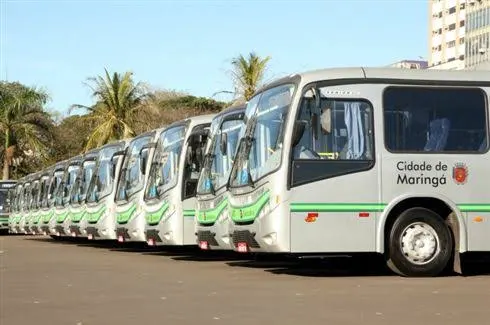

Aumento do valor da passagem no interior do Paraná
Aumento do valor da passagem assusta moradores do interior do Paraná

s
A Cidade Verde, anunciou neste dia 01 de julho o aumento do valor das passagens de seu transporte público, assustando os moradores do interior do Paraná que partem para outras cidades trabalhar, como moradores de Doutor Camargo e Ivatuba, principalmente.
A tabela abaixo mostra com clareza o aumento dos valores e suas respectivas cidades. Observe: